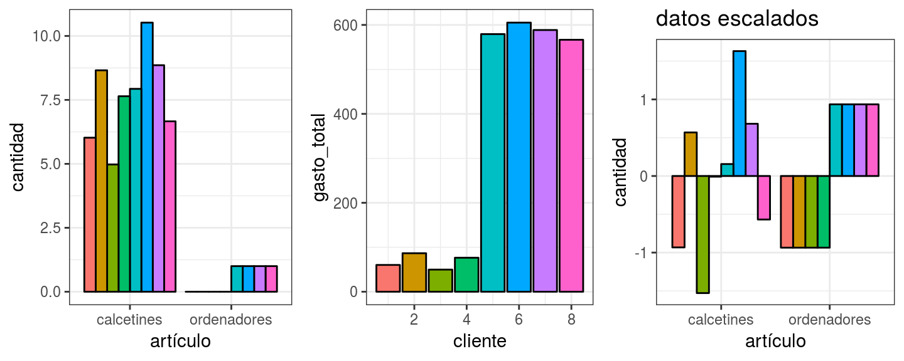

Kmeans
Introducción intuitiva
Created by Diego Manzur
Introducción
El término clustering hace referencia a un amplio abanico de técnicas unsupervised cuya finalidad es encontrar patrones o grupos (clusters) dentro de un conjunto de observaciones. Las particiones se establecen de forma que, las observaciones que están dentro de un mismo grupo, son similares entre ellas y distintas a las observaciones de otros grupos. Se trata de un método unsupervised, ya que el proceso ignora la variable respuesta que indica a que grupo pertenece realmente cada observación (si es que existe tal variable).
Tipos de Kmeans
Partitioning Clustering: Este tipo de algoritmos requieren que el usuario especifique de antemano el número de clusters que se van a crear (K-means, K-medoids, CLARA).
Hierarchical Clustering: Este tipo de algoritmos no requieren que el usuario especifique de antemano el número de clusters. (agglomerative clustering, divisive clusterig).
Medidas de Distacia
Todos los métodos de clustering tienen una cosa en común, para poder llevar a cabo las agrupaciones necesitan definir y cuantificar la similitud entre las observaciones. El término distancia se emplea dentro del contexto del clustering como cuantificación de la similitud o diferencia entre observaciones. Si se representan las observaciones en un espacio p dimensional, siendo p el número de variables asociadas a cada observación, cuando más se asemejen dos observaciones más próximas estarán, de ahí que se emplee el término distancia. La característica que hace del clustering un método adaptable a escenarios muy diversos es que puede emplear cualquier tipo de distancia, lo que permite al investigador escoger la más adecuada para el estudio en cuestión. A continuación, se describen algunas de las más utilizadas.
Propiedades de Medidas de Distacia
- $$d(p,q) = 0 \Leftrightarrow p=q$$
- $$d(p,q) = d(q,p)$$
- $$d(p,r) \leq d(p,q) + d(q,r)$$
- $$d(p,q) \geq 0 $$
Distancia Euclidiana
La distancia euclídea entre dos puntos p y q se define como la longitud del segmento que une ambos puntos. En coordenadas cartesianas, la distancia euclídea se calcula empleando el teorema de Pitágoras. Por ejemplo, en un espacio de dos dimensiones en el que cada punto está definido por las coordenadas , la distancia euclídea entre p y q viene dada por la ecuación:
$$d_{euc}(p,q) = \sqrt{(x_p - x_q)^2 + (y_p - y_q)^2}$$
Distancia Euclidiana
Esta ecuación puede generalizarse para un espacio euclídeo n-dimensional donde cada punto está definido por un vector de n coordenadas: $$p=(p_1,p_2,p_3,...,p_n)$$ y $$q=(q_1,q_2,q_3,...,q_n)$$
$$d_{euc}(p,q) = \sqrt{(p_1 - q_1)^2 + (p_2 - q_2)^2 +...+(p_n - q_n)^2} = \sqrt{ \sum_{i=1}^n (p_i - q_i)^2}$$
Distancia Manhattan - L1
La distancia de Manhattan, también conocida como taxicab metric, rectilinear distance o L1 distance, define la distancia entre dos puntos p y q como el sumatorio de las diferencias absolutas entre cada dimensión. Esta medida se ve menos afectada por outliers (es más robusta) que la distancia euclídea debido a que no eleva al cuadrado las diferencias.
$$d_{man}(p,q) = \sum_{i=1}^n |(p_i - q_i)|$$
Distancia Correlación
La correlación es una medida de distancia muy útil cuando la definición de similitud se hace en términos de patrón o forma y no de desplazamiento o magnitud. ¿Qué quiere decir esto? En la imagen del apartado de la distancia euclídea, las dos observaciones tienen exactamente el mismo patrón, la única diferencia es que una de ellas está desplazada 4 unidades por encima de la otra. Si se emplea como medida de similitud 1 menos el valor de la correlación, ambas observaciones se consideran idénticas (su distancia es 0).
$$d_{cor}(p,q) = 1 - \text{correlacion}(p,q)$$
donde la correlación puede ser de distintos tipos (Pearson, Spearman, Kendall…) Correlación lineal.
Problema de Escala

Intuición de Kmeans
El método K-means clustering (MacQueen, 1967) agrupa las observaciones en K clusters distintos, donde el número K lo determina el analista antes de ejecutar del algoritmo. K-means clustering encuentra los K mejores clusters, entendiendo como mejor cluster aquel cuya varianza interna (intra-cluster variation) sea lo más pequeña posible. Se trata por lo tanto de un problema de optimización, en el que se reparten las observaciones en K clusters de forma que la suma de las varianzas internas de todos ellos sea lo menor posible. Para poder solucionar este problema es necesario definir un modo de cuantificar la varianza interna.
Intuición de Kmeans
Considérense ,…, como los sets formados por los índices de las observaciones de cada uno de los clusters. Por ejemplo, el set contiene los índices de las observaciones agrupadas en el cluster 1. La nomenclatura empleada para indicar que la observación pertenece al cluster es: . Todos los sets satisfacen dos propiedades:
. Significa que toda observación pertenece al menos a uno de los K clusters.
para todo . Implica que los clusters no solapan, ninguna observación pertenece a más de un cluster a la vez.
Intuición de Kmeans
Dos de las medidas más comúnmente empleadas definen la varianza interna de un cluster () como:
- La suma de las distancias euclídeas al cuadrado entre cada observación () y el centroide () de su cluster. Esto equivale a la suma de cuadrados internos del cluster.
$$W(C_k) = \sum_{x_i,\in C_k} (x_{i} - \mu_k)^2$$
- La suma de las distancias euclídeas al cuadrado entre todos los pares de observaciones que forman el cluster, dividida entre el número de observaciones del cluster.
$$W(C_k) = \frac{1}{|C_k|} \sum_{i,i' \in C_k} \sum^p_{j=1}(x_{ij} - x_{i'j})^2$$
Intuición de Kmeans Algoritmo
Asignar aleatoriamente un número entre 1 y a cada observación. Esto sirve como asignación inicial aleatoria de las observaciones a los clusters.
Iterar los siguientes pasos hasta que la asignación de las observaciones a los clusters no cambie o se alcance un número máximo de iteraciones establecido por el usuario.
2.1 Para cada uno de los clusters calcular su centroide. Entendiendo por centroide la posición definida por la media de cada una de las dimensiones (variables) de las observaciones que forman el cluster. Aunque no es siempre equivalente, puede entenderse como el centro de gravedad.
2.2 Asignar cada observación al cluster cuyo centroide está más próximo.
Intuición de Kmeans Algoritmo